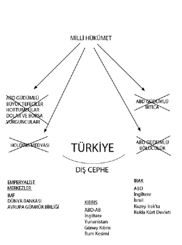
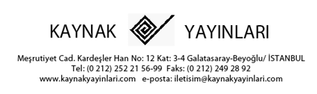
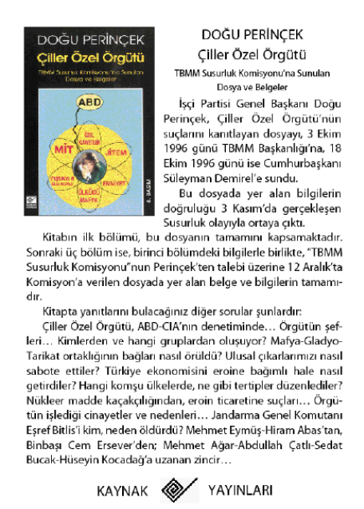
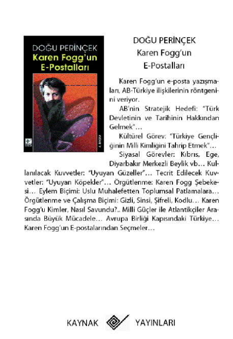
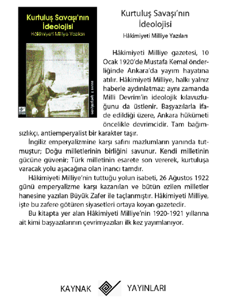

SONUÇ: KUŞATMA NEREDEN VE NASIL YARILIR
I. KUŞATILMIŞ TÜRKİYE
Türkiye, bugün dış cepheden ve iç cepheden kuşatılmış durumdadır. Bu kuşatma, 1990 yılındaki Birinci Körfez Savaşı’ndan sonra ABD’nin Irak’ın kuzeyinde bir kukla devlet kurmasıyla başladı; 3 Kasım 2002 erken seçimlerinde, ABD’nin bir operasyonla AKP iktidarını Türkiye’nin tepesine oturtmasıyla tamamlandı. Seçim sürecinde ısrarla belirttiğimiz gibi, ABD, Türkiye’yi içerden vuracak bir hükümet planlamıştı ve bunu gerçekleştirdi. AKP iktidarı, yönetime geldiği günden beri hem Irak cephesinde, hem de Kıbrıs cephesinde ABD ile işbirliği halindedir ve Türkiye’yi içerden vurmaktadır.
Türkiye’yi dış cepheden kuşatan güçler şunlardır:
Kıbrıs cephesinde
- ABD-AB
- İngiltere
- Yunanistan
- Güney Kıbrıs Rum kesimi
Irak cephesinde
- ABD
- İngiltere
- İsrail
- Kuzey Irak’ta Kukla Kürt Devleti
Türkiye’yi iç cepheden kuşatan güçler ise şöyle sıralanabilir:
- Tayyip Erdoğan iktidarı
- ABD güdümlü büyük tefeciler, hortumcular, dolar ve borsa vurguncuları
- Holding medyası
- ABD güdümlü irtica
- ABD güdümlü bölücülük
Ekonomik kuşatma, teslimiyetin zeminini oluşturmaktadır. Türkiye bugün toplam 300 milyar dolar iç ve dış borca batırılmış bulunmaktadır. Herkes bilmektedir ki, Türkiye’nin bugünkü mafya-tarikat rejimi içinde bu borcu ödeme olanağı yoktur. Buna rağmen dünya merkezleri borç vermeye devam ediyor. Çünkü amaçları Türkiye’ye haciz koymaktır. Türkiye’nin, bu borcu, toprağıyla ve Mehmetçiğin kanıyla ödemesi planlanmıştır.
II. İKTİDAR MEVZİLERİNDEN KUŞATMA
Bugün Türkiye’de mafya-tarikatçı-bölücü koalisyonu iktidardadır. Tayyip Erdoğan’ın kurmay kadrosu, CIA güdümlü mafya-tarikat kadrolarından ve yine CIA bağlantılı bölücülerden oluşmaktadır.
AB’ye Uyum Yasaları, İkiz İhanet Yasaları, Kamu Yönetimi Temel Kanunu AB ilerleme raporları, 17 Aralık 2004 Brüksel zirvesi ve Türk Ordusu‘nun Kıbrıs’tan çıkartılması gibi, Türk devletini adım adım ortadan kaldıran girişimlerde, AKP yönetimi ve PKK hep aynı cephede ve işbirliği halindeler. ABD’nin planındaki birinci aşama gereği, Türkiye’deki yerel yönetimler AKP ile PKK arasında parsellenecek ve Türkiye’nin bölünmesi süreci yerel zemine oturtulacaktır. Yerel yönetimler, çeşitli NGO’lar, bazı vakıflar, bazı tarikatlar vb. bu amaçla kullanılmaktadır.
Hep böyle olmuştur: Tarihimizin bütün devrimci atılımlarında Türk ve Kürt ortak vatanlarının bağımsızlığı için sımsıkı birleşirken, emperyalizm onlara karşı irtica ve bölücülüğü Türkiye’yi içerden vurmak için kullanmıştır.
Gelinen nokta çarpıcıdır. Kimin aklına gelirdi, Türkiye’de Boşnakça, Lazca ve Zazaca televizyon olacak ve etnik parçalama devlet eliyle yürütülecek.
Millî devlet, devlet iktidarını ele geçiren Haçlı İrtica ve bölücülük tarafından yıkılmakta ve millet dağıtılmaktadır. Millî devletin ve milletin temelini oluşturan Kemalist Devrim Türkiye’nin altından çekildiği zaman, doğacak sonuç budur.
Millî Hükümetin Kurulması
Cumhuriyet’i yıkmak isteyenler kesinlikle yıkılacaktır.
Tayyip Erdoğan’ın attan düşüşü, bir ata binme macerasının sonunu göstermişti. Herkes attan düşebilir. Ama bir başbakan, fiyaka için atın üzerine çıkarsa, ortada bir macera olayı vardır. Tayyip Erdoğan’ın şov yapacağım diye manejde ata binmesi ile iktidarda yaptıkları arasında çarpıcı bir benzerlik bulunuyor. Tayyip Erdoğan, bilmediği ve yapamayacağı işlere kalkışmaktadır ve yeteneksizliğini de şovla örtmek peşindedir.
Küçük macera attan düşmekle sonuçlanmıştır. Büyük macera ise, iktidar koltuğundan düşmekle sonuçlanacaktır.
Tayyip Erdoğan iktidarının bertaraf edilmesi ile Millî Hükümetin kurulmasını, mutlaka tek bir eylem olarak düşünmemek gerekir. Sürecin çeşitli aşamalardan geçen bir seyir izlemesi daha büyük olasılıktır. Önce Tayyip Erdoğan iktidarı bertaraf edilecek, sonra bazı ara aşamalardan geçilecek, çeşitli hükümet çözümleri denenecek ve zamanla Türkiye’nin ihtiyacı olan, Millî Hükümet çözümüne varılacaktır. Bugün mesele, Türkiye’yi Haçlı irticadan kurtaracak ve millî hükümeti kuracak gücü adım adım inşa etmektir.
Millî Hükümetin Program ve Stratejisi
Millî Hükümetin programı, özet olarak millî devleti savunmak ve Kemalist Devrim’i tamamlamak; Cumhuriyet’in değerleri temelinde, bağımsız, halkçı, kamu sektörü ve özel sektörün toplumun ihtiyaçlarını karşılamak için birbirini tamamladığı, laik bir Türkiye kurmaktır.
Bu programın alt başlıklarını sıralayacak olursak:
- İç tehdit unsurlarını bertaraf ederek milletin güçlerini birleştirmek, caydırıcı bir savunma kuvveti inşa etmek.
- Dış tehdide karşı Kıbrıs ve Kuzey Irak cephelerinde kararlı direnme, Irak’taki ABD işgaline son verilmesi ve Irak’ın toprak bütünlüğünün sağlanması, Kuzey Kıbrıs Türk Cumhuriyeti’ni tanımaya yönelik Avrasya birikiminin harekete geçirilmesi.
- Millî Direnme Ekonomisini inşa etmek, iç borçları on yıl takside bağlamak, hortumcunun malına el koymak, ülke içindeki dolar ve euroyu Türk lirasıyla değiştirmek, Avrupa Gümrük Birliği’nden çıkmak, Türkiye’de üretilebilen malları dışardan almamak, bir üretim ekonomisi inşa etmek için tarımı ve millî sanayiyi desteklemek, özelleştirmeye son vermek, KİT’lere yatırım yaparak verimli çalışmalarını sağlamak, ülkenin bütün işgücü birikimini değerlendirecek bir emek seferberliği gerçekleştirmek, iç piyasada yabancı hipermarket ve süpermarketlerin hegemonyasına son vererek Türk esnaf ve tüccarının ticaret tekelini sağlamak.
MİLLÎ HÜKÜMETİN PROGRAM VE STRATEJİSİ
Türkiye’nin bölgedeki ve dünyadaki ittifak potansiyelini değerlendirmesi, öncelikle Türkiye’nin kendisini savunmaya karar vermesine bağlıdır. Kendisini savunmada kararlılık gösteren bir Türkiye, Kıbrıs ve Kuzey Irak cephelerinde müttefik bulabilir.
Millî Hükümetin stratejisi, millî devleti yeniden kurarak, Kemalist Devrim’i tamamlamaktır.
- Bu amaçla, başta ABD emperyalizmi olmak üzere emperyalizme ve Ortaçağ ilişkilerine karşı, işçi sınıfı, köylülük, küçük esnaf ve zanaatkâr, millî sanayici ve tüccar ile ordudan oluşan milletin bütün güçleri birleştirilecektir.
- Bugün belirleyici görev, ABD’den gelen esas tehdide karşı millî bağımsızlığın, millî egemenliğin, toprak bütünlüğünün ve Cumhuriyet Devrimi değerlerinin savunulmasıdır.
- ABD tehdidine karşı, başta Rusya-İran-Azerbaycan-Suriye ve diğer Arap ülkelerinin oluşturduğu bölge güçleri olmak üzere Çin ve Orta Asya cumhuriyetlerinden Almanya-Fransa’ya kadar uzanan Avrasya ittifak potansiyelini adım adım harekete geçirmek, uluslararası görevdir.

KİTABIN TEZLERİ
1. İki kamp: Bugün dünyanın açıklanmasında ve Türkiye’nin Kemalist Devrim’i tamamlama stratejisinin oluşturulmasında, dünyanın Ezen ve Ezilenler diye iki kampa ayrıldığını saptamak, belirleyici önemdedir.
2. Ezen-Ezilen kamplaşması keskinleşiyor: Küreselleşme denen süreç, emperyalizm ve devrimler çağının 1990 sonrasındaki dönemidir. Bu sürecin en önemli özelliği, dünya ölçeğinde ve tek tek ülkelerin içinde zengin ile yoksul arasındaki uçurumu derinleştirmesi, emperyalizm ile Mazlumlar Dünyası arasındaki çelişmeyi olağanüstü ölçülerde şiddetlendirmesidir. O kadar ki, emperyalist sistemin başını çeken ABD, bu süreçte Yeni Dünya Düzeni tasarımıyla millî devletleri ortadan kaldırmayı ve bu sayede bütün dünya ekonomisini kendi hegemonyası altında tek bir dünya piyasasında bütünleştirmeyi amaçlamıştır. Bu nedenlerle küreselleşme sürecinde gittikçe daha derin çelişmelerle ve daha kalın duvarlarla birbirinden ayrılan ve birbirine karşı mevzilenen emperyalizm ile Ezilen Dünya arasında “ortak değerler”, “ortak yaklaşımlar” ve “ortak tavırlar” yoktur; “karşıt değerler”, “karşıt yaklaşımlar” ve “karşıt tavırlar” vardır. Emperyalist sistemin “ortak değerler” diye adlandırdığı kavramlar, emperyalizmin çıkarlarını temsil etmektedir. Bu çıkarlar, Mazlumlar Dünyasına “zorla” dayatılmıştır. Ancak dünya hızla uyanmaktadır.
3. Emperyalistler arası çelişmeler keskinleşiyor: Kapitalizm, her zaman çok sayıda sermayenin birbiriyle rekâbetidir. Kapitalizm, tekelleşmekle birlikte tek bir kapitaliste dönüşemez. O zaman kapitalizm kalmaz. Milletlerarası tekeller, tek bir dünya tekeli oluşturmuş değillerdir ve oluşturamazlar. Aralarındaki kıyasıya çarpışma, emperyalist devletler arasındaki bloklaşma ve kapışmalar zemininde cereyan etmektedir. O nedenle emperyalizm tek bir süper devlet veya ultra süper devlet çatısı içinde birleşmiş veya toplanmış değildir. Emperyalist devletler arasındaki rekâbet ve çatışma, önümüzdeki dönem daha derinleşecektir. ABD patronluğu altında tek kutuplu bir dünyanın kurulması mümkün değildir. Dünyanın gidişi çok kutuplu yöndedir. Bu durum, millî devletler için baştehdit olan ABD emperyalizmine karşı yeni ittifak ve dolaylı ittifak imkânları yaratmaktadır. ABD emperyalizmini tecrit eden dünya güvenlik stratejisi, Rusya, Avrupa Birliği ve Japonya gibi büyük kapitalist devletlerle ittifak ve dolaylı ittifak imkânlarını da içermektedir. Bunlardan Rusya, iki kez parçalanan bir büyük devlet olarak, bir bakıma Mazlum Milletler konumuna itilmiştir ve savunmadadır ve daha çok uzun süre savunmada kalmak zorundadır. Bu açıdan Türkiye için güvenli bir cephe gerisini ve işbirliği olanağını temsil etmektedir. AB ve Japonya ise, gelişmiş kapitalist ülkeler olmaktan gelen çıkarları gereği, ABD tehdidiyle göğüs göğüse gelmişlerdir.
4. Serbest piyasanın rolü: ABD emperyalizminin tek kutuplu dünya planının ekonomik aracı, sözde serbest piyasadır. Dünya ölçeğindeki “serbest piyasa” denen mekanizma, aslında tekellerin diktatörlüğünü örten bir perdedir.
5. Şirket-devlet ilişkisi: Devlet, eskiden beri şirketlerin gücüdür ve şirketler de güçlerini devlet üzerinden büyütürler. Emperyalizm çağında devletin rolü ve müdahale alanı daha da artmış ve genişlemiştir.
6. Emperyalist devletin işlevi: Emperyalist sistem, büyük devletler arasında en sonunda silahların konuştuğu hegemonya mücadelesidir. Emperyalist devletin işlevi, bu üstünlük mücadelesini yürütmektir. Burada şirketin çıkarı değil, şirketlerin ağırlıklı kesimini temsil eden tekelci kapitalist devletin çıkarı belirleyici olur. Şirket kârının değil, kuvvetin azamîye çıkarılması da bu sayede gerçekleştirilir.
7. Silahın rolü: Dünyanın yeniden paylaşılması, 19. yüzyılın sonlarından beri ancak ve ancak silahlı güçle gerçekleştirilebiliyor. Ekonomik açıdan geriden gelen kapitalist devlet, ancak silah üstünlüğü kurarak, dünyanın yeniden paylaşımını talep edebilir, ancak bu yoldan rakibini geçebilir ve ekonomik üstünlüğü sağlayabilir. Bu nedenle büyük kapitalist ülkeler, azamî silahlı güç inşasını, 20. yüzyılın eşiğinden başlayarak, temel politika olarak belirlemiş ve uygulamışlardır.
8. Dünya gericiliğinin merkezi: Demokrasiyi, rekâbet çağındaki kapitalizm getirmişti. Gençlik çağındaki kapitalizm, köylüyü feodal bağlardan kurtarmıştı ve feodal devletlerle birlikte Ortaçağ ilişki ve kurumlarını tasfiye etmişti. Ancak kapitalizm, emperyalizm çağında, Ezilen Dünya’daki her türlü gericilikle ittifak ederek, demokrasi karşıtlığına dönüşürken, kendi iç ilişkilerinde de, demokrasinin kazanımlarını yok etti. Demokrasi ve insan hakları emperyalist kapitalist ülkelerin merkezlerinde, artık bütünüyle görüntüdür, sahtedir ve eskiden kalan bir kabuktan başka bir şey değildir.
9. Dünyanın demokrasi dinamiği: Emperyalist merkezler, özellikle ABD, artık kendi içinde ve dışında her türden gericiliğin ve demokrasi karşıtlığının ekseni haline gelmiştir. Emperyalizme karşı millî devletlerini korumaya çalışan gelişmekte olan ülkeler ise, bugün dünyamızda demokrasi dinamiğinin görece var olabildiği alanlardır.
10. Demokrasi ve ulusallık: Faşizm, yalnız emperyalist ülkelerde değil, Ezilen Dünya’da da emperyalizm eksenlidir. Ezilen Dünya ülkelerindeki hâkim güçler, dünya gericiliğinin merkezi olan emperyalizmin en şoven ve en zalim güçlerine daha sıkı bağlandıkları oranda faşizme yöneliyorlar. Emperyalizme daha fazla bağımlılık, faşizm eğilimini güçlendirir. Daha fazla ulusallık ise, daha fazla demokrasi getirir. Halkçı-devrimci demokrasi ve ulusallık, birbirlerini güçlendirirler.
11. Kuvvet dengelerinde değişme: Kapitalizm, toplumsal-ekonomik kuruluşun niteliğinde değişiklik anlamında yeni bir aşamaya girmiyor. Hâlâ Lenin’in teorisini yaptığı tekelci kapitalizm çağındayız, başka deyişle emperyalizm ve devrimler çağındayız. Ancak 1990 yılından beri emperyalist sistemin siyasal dengelerinde önemli değişiklikler yaşanıyor. ABD emperyalizmi, 1990 öncesinde rakibi Sovyetler Birliği tarafından dengelendiği için, hem Avrupa ve Japonya gibi büyük kapitalist devletler, hem de Ezilen Dünya devletleri, geniş bir manevra alanına sahiplerdi. ABD emperyalizmi, iki kutuplu dünya koşullarında, Ezilen Dünya devletlerini ve görece zayıf kapitalist devletleri parçalama, dağıtma ve mümkünse sömürgeleştirme fırsatını bulamıyordu. Ancak rakibi Sovyetler Birliği’ni dağıttıktan, iki kez böldükten ve savunmaya ittikten sonra bu fırsatı yakaladığı hesabıyla atağa geçmiştir. Değişiklik, sistemin niteliğinden çok, siyasal dengelerdedir.
12. Yeni Dünya Düzeni: Kapitalizmin, 20. yüzyılda iç sömürüyü azaltması, kendi tercihinin sonucu değil, fakat 19. ve 20. yüzyılda dalga dalga yükselen devrimlerin dayatmasıydı. Emperyalist devletler, Birinci Dünya Savaşı öncesinden beri kendi ülkelerindeki işçi hareketini yatıştırmak için, elde ettikleri dış sömürüden kendi emekçi sınıflarına pay veriyorlardı. Dünya dengeleri ABD emperyalizminin lehine değişince, bu politikalardan vazgeçilmiş ve Yeni Dünya Düzeni projesi gündeme getirilmiştir. Bugün özetle emekçinin maliyetini ucuzlatan ve Ezilen Dünya üzerindeki sömürüyü ağırlaştıran program uygulanmaktadır. Paranın sınırsız dolaşımı, gümrüklerin kaldırılması, özelleştirme, devletin küçültülmesi, sosyal hakların kısıtlanması, işten çıkartma ve sendikasızlaştırma, emperyalist saldırının altbaşlıklarıdır.
13. Millî devletin rolü: Emperyalizm, azamî sömürü eğilimidir. Ancak Ezilen Dünya devletleri ve emperyalist devletler arası çelişmeler, azamî sömürüyü sınırlar. Bu açıdan azamî sömürü eğilimi, başka ülkeleri devletsiz bırakma eğilimi diye de tanımlanabilir. Çünkü millî devlet, iç pazarıyla, gümrükleriyle, destek ve teşvik uygulamalarıyla kendi iç piyasasını korur ve dünya piyasasının genişlemesi önünde set oluşturur.
14. Küreselleşmenin önündeki esas engel: ABD merkezli emperyalist sistemin küreselleşme denen sömürgeleştirme saldırısının önündeki esas engel, millî devletlerdir. Mustafa Kemal tarafından sık sık belirtildiği ve Lenin’in önerisi üzerine 1920 Komünist Enternasyonal Kongresi kararında da saptandığı üzere, emperyalizm çağının başçelişmesi olan ezen-ezilen milletler çelişmesi, günümüz durumunda ezenler ile millî devletler arasındaki çelişmedir. Ezilen milletler (Mazlumlar), arkada kalan 80 yıl içinde millî kurtuluş savaşları yoluyla sömürge olmaktan kurtulmuş ve millî devletlerini kurmuşlardır. Ancak 1990’lardan beri küreselleşme saldırısıyla yüz yüze gelerek yeniden sömürgeleşme tehdidiyle karşı karşıya kalmışlardır. O nedenle dünya ölçeğindeki mücadele, günümüzde ABD emperyalizminin başını çektiği kuvvetler ile yok olma tehdidi altındaki millî devletler arasındadır. Millî devletlerin savunulması, dünya devriminin bugünkü esas savunma hattı olarak saptanmazsa, emperyalizme karşı mücadele başarıyla sürdürülemez.
15. Ayrılma hakkının ilerici içeriği kalmadı: Sömürgelerin kurtuluş döneminde esas olarak halkların ve milletlerin bağımsız devletler kurmalarına hizmet eden, milletlerin kendi kaderlerini tayin hakkı, 1990’dan sonra ABD tarafından bağımsız devletlerin parçalanması ve sömürgeleştirilmesi amacıyla kullanılmaktadır. Artık dünyada sömürge kalmamıştır, ancak sömürgeleşme tehdidi altında olan millî devletler vardır. O nedenle millî devletleri parçalama amacının hizmetinde olan milletlerin kendi kaderlerini tayin hakkının devrimci ve ilerici bir içeriği kalmamıştır. Bugün ilerici olan, devletlerin bağımsızlık, Afganistan ve Irak gibi ülkelerin işgalden kurtuluş ve halkların devrim mücadeleleridir. 1970’lerde ortaya atılan “Devletler bağımsızlık, milletler kurtuluş, halklar devrim istiyor” formülü, bu içerikle bugün de geçerlidir. Millî devletlerin bağımsızlık mücadelesi, bu üç mücadele içinde birinci önemdedir ve bugün dünya tarihinin en büyük itici gücüdür.
16. Bugünkü süreç: Vahşi kapitalizm, kapitalizmin belli tarihsel evresidir. Vahşi kapitalizmde, işgücünün maliyetini düşüren kıyasıya rekâbet geçerlidir. 20. yüzyıl eşiğinde ortaya çıkan tekelci kapitalizmin bugünkü gidişatı, kârın verimliliğe göre dağıldığı bir piyasa ve rekâbet sistemi, yani vahşi kapitalizm yönünde değil, tam tersine tekelleşmeyi daha da yoğunlaştıran bir yöndedir. Vahşi kapitalizm, kapitalizmin yükseliş döneminin sistemidir. Emperyalizm ise, kapitalizmin çürüme ve çökme döneminin sistemidir.
17. Çürümede başdöndürücü hızlanma: Yeni Dünya Düzeni’nin olguları, emperyalist sistemin toplumsal-ekonomik kuruluşunda nitelik değişikliği anlamına gelmiyor. Tekelci sistemin sermaye ihracına dayanan, “çürüyen ve geberen kapitalizm” diye tanımlanan esas niteliği devam ediyor. Ancak çürüme ve yıkımda başdöndürücü bir hızlanma ve yayılma görülüyor.
18. Suç ekonomisi: Sistem, mafyalaşmaktadır. Kapitalizm, artık suç ekonomisine dönüşmüştür. Bütün dünyada sanayi ve ticaret sermayesi sistemin kenarlarına sürülmektedir. Merkezlere, mafya yerleşmektedir. Bu koşullarda “dünya ile bütünleşme” denen olay, dünya mafyasıyla bütünleşmedir. Yeraltı ekonomisi veya suç ekonomisi, bütünleşmenin başını çekmektedir.
19. Mafyokrasi: Sistemin tepesine, ABD’nin savaş ve uyuşturucu kliğini temsil eden bir mafya, bir savaş çetesi oturmuştur. ABD mafyasının aldığı kararlar, ABD’nin devlet örgütü ve diğer gütme mekanizmalarıyla uygulanmaktadır. Seçimler, özgürlükler, meclisler, sivil toplum kuruluşları vb.; ABD mafyasının kararlarını hayata geçiren mekanizmaların ve törenlerin toplamı haline gelmiştir. İnsanlık tarihinin gördüğü en dar çıkarları temsil eden, en terörcü, en yalancı, en düzenbaz, en insanlık düşmanı rejim kurulmuştur. Bu gerçekler, sistemin kumandasındaki kitle iletişim mekanizması aracılığıyla perdelenmekte ve bütün insanlık bir budalalar toplumuna dönüştürülmektedir. Bu rejim, artık demokrasi değil, mafyanın hâkimiyet sistemidir; başka deyişle mafyokrasidir.
20. “Bırakınız yapsınlar”ın bugünkü içeriği: Dünyadaki liberalleşme, para dolaşımının serbestleşmesi, sınırların kaldırılması, devletin küçültülmesi, etnik gruplara, tarikatlara ve cemaatlere özgürlük vb., bütün bunlar, dünya mafyasının talepleridir. Liberalizmin ünlü, “Bırakınız yapsınlar, bırakınız geçsinler” sloganı, bugün mafyanın sloganı olmuştur. “İnsan hakları” sopası, emperyalizm tarafından insanlığa karşı kullanılmaktadır. Her şey mafyanın dizginsiz özgürlüğü içindir.
21. Mafya sisteminin ideolojik denetim araçları: Emperyalizmin ideolojisi, Neoliberalizmdir. Sistemin geniş kitleler üzerindeki ideolojik hegemonya araçları, merkezlere yaklaştıkça Anarşizm ve vatansızlık; çevreye yaklaştıkça her türden Ortaçağ ideolojisidir; Türkiye özelinde Haçlı İrticadır. ABD emperyalizmi, bazı dağınık ve başıbozuk güçleri, özellikle kent gençliği içinde Anarşizmi ve vatansızlığı yayarak ve “küreselleşmeye karşı küresel direniş” gibi sloganlarla millî devletlere karşı kışkırtmakta ve piyon olarak kullanmaktadır.
22. Kriz etkenleri: Özelikle son küreselleşme saldırısıyla talebi belirleyen, dolayısıyla tüketimi belirleyen bütün etkenler, daha da aşağı çekilmektedir. Kapitalizmin azamî kâr amacı nedeniyle geniş kitlelerin talebini (tüketimi) sınırlamak zorunda olması, kriz nedenidir ve sistemin temellerini oyan bir işlev görmektedir. Ancak mafyalaşan sistemin artık üretimle, insan hayatıyla, doğayla karşı karşıya gelmesi, sistemi çökertecek büyük sarsıntıların zeminini oluşturmaktadır.
23. Kapitalizmin kaybolan sihiri: Kapitalizm, bütün sihir ve kerametini kaybetmektedir. Çünkü kaynaklar, sanayi ve ticaretteki verimliliğe göre değil, mafya vurgunlarına göre dağılmaktadır. Sistem, insan hayatını sürdürmeye ve insan ihtiyaçlarını karşılamaya hizmet eden üretimden hızla kopmakta, tam tersine varlığını gittikçe daha büyük oranda insan hayatına kasteden uyuşturucu ve silah imali ve ticaretine dayandırmaktadır. İnsan ihtiyaçlarını karşılayan malların üretimiyle ilgili faaliyetin hacmi daralırken, üretilenlerin mafyalaşmış bir zümre tarafından paylaşılmasına yönelik para hareketleri ve borsa gibi faaliyetlerin alanı genişlemektedir. Bugün kapitalizm ve küreselleşen piyasa, insan ihtiyaçlarını karşılamak bir yana, artık hayata karşıdır.
24. Sistemin vazgeçilmezleri: Sistem, uyuşturucu, beyaz kadın ve silah ticaretinden vazgeçemez; vazgeçecek olsa yıkılır. Çünkü sistem, uyuşturucu ve silah üretim ve ticareti üzerinde yükselmektedir.
25. Küresel tehdit: “Küreselleşme” dedikleri süreç daha sonuna varmadan, bütün insanlık, başını ABD mafyasının çektiği küresel bir tehditle karşı karşıya gelmiştir. Tarihte ilk kez bir sistem, doğayı ve insan hayatını yıkıma uğratacak boyutlarda bir tehdit oluşturmaktadır.
26. Ecel saati: Lenin’in “Çürüyen ve geberen kapitalizm” tahlili, bugün 90 yıl öncesine göre, daha geçerlidir. Kapitalizm, artık hayatı değil, ölümü temsil etmektedir; zehirle ve silahla yaşamaktadır. Kendisini sürdürmek için, milyarlarca insanı zehirlemek ve öldürmek, doğayı ve yaşamı yıkıma uğratmak durumunda olan bir sistemin ecel saati gelmiştir.
27. Kolektif projeler ve kamu mülkiyeti: İnsanlık, gözü dönmüş kâr ve bireysel çıkar sisteminden kaynaklanan bu tehdidi, ancak ve ancak toplum yararına öncelik vererek aşabilir. Bu aşamada çıkış yolu, devlet müdahalesi ile özel girişimciliği toplumun çıkarları için uyumlu hale getiren, ancak kamu mülkiyetine yönlendirici rol veren karma ekonomidedir. İnsanlık, karşılaştığı büyük sorunları, kaçınılmaz olarak, büyük kolektif tasarımlarla ve gittikçe daha büyük ölçüde kamu mülkiyetiyle çözme yönünde ilerlemek zorundadır.
28. Dünya ölçeğinde temel çelişme: Bugün dünya ölçeğinde baktığımız zaman, üretici güçlerin gelişmesine ayak bağı olan üretim ilişkileri, emperyalizm veya mafyalaşan kapitalizm diye tanımlanabilir. Üretici güçler, ancak büyük kolektif tasarımlarla ve kamu mülkiyetiyle özgürleştirilebilir ve geliştirilebilir. Bu nedenle dünya ölçeğinde stratejik planda süreç, emperyalist sistemden sosyalizme geçiş sürecidir. Dünya ölçeğinde temel çelişme, mafyalaşan kapitalizm ile sosyalizm arasındadır. Ancak sosyalizme geçiş, dünya ölçeğinde anti-emperyalist ve anti-mafya devrimleri, bir anlamda yeni bir demokratik devrim dalgasını izleyecektir.
29. Dünya ölçeğinde başlıca çelişmeler: Başlıca çelişmeler bugün beş başlıkta toplanabilir. Bir: Emperyalizm ile Ezilen Milletler arasındaki çelişme. İki: Emperyalistler arasındaki çelişme. Üç: Mafyalaşan kapitalizm ile sanayi ve ticaret burjuvazileri de dahil olmak üzere bütün insanlık arasındaki çelişme. Dört: Emperyalist ülkeler ile sosyalist ülkeler arasındaki çelişme. Beş: Kapitalist ülkelerin burjuvazileri ile işçi sınıfları arasındaki çelişme.
30. Dünya ölçeğinde başçelişme: Günümüz sürecinde diğer çelişmelerin çözümünü belirleyen başçelişme, Emperyalizm ile Ezilen Milletler arasındaki çelişmedir. Bu çelişme şu aşamada özellikle ABD emperyalizmi ile Millî Devletler arasındaki çelişmede kendisini göstermektedir.
31. Savaş devrime yol açar: Ya devrimler savaşı önler, ya savaş devrimlere yol açar seçenekleri bugün de geçerlidir. ABD emperyalizmi, Afganistan ve Irak işgaliyle batağa saplanmıştır. Afgan ve Irak halkının bağımsızlık ve birlik savaşları büyük başarılar kazanmaktadır ve bölge devletlerinin direnişi gündemdedir. Savaşın yayılmasını önleme olasılığı pek gözükmüyor. Yaşanan savaşın devrimlere yol açması seçeneği, ağır basmaktadır.
32. Yeniden devrimler çağı: İnsanlığın önünde, anti-emperyalist ve anti-mafya karakterde millî demokratik devrimlerden sosyalizme uzanan bir devrimler dönemi bulunmaktadır. 20. yüzyılın başında girdiğimiz “Emperyalizm, Millî Kurtuluş Savaşları ve Emekçi Devrimleri Çağı” devam etmektedir. Devrim dalgası, çeyrek yüzyıllık bir geri çekilişten sonra, mafyalaşan emperyalizm koşullarında en büyük yükselişinin eşiğine gelmiştir.
33. Atlantik çağının sonu, Avrasya uygarlığının eşiği: Emperyalizmin çöküşü, aynı zamanda 500 yıllık Batı uygarlığının çöküşüdür. Asya uygarlığı yükselmektedir. Bu yeni yükseliş, kapitalizmin çevresinde kalmış halkların millî demokratik devrimlerini tamamlayarak sosyalist bir uygarlık kurmalarına doğrudur.
34. Tek kutuplu dünyanın imkânsızlığı: Bütün emperyalistlerin yekpare bir blok oluşturması olasılığı yoktur. Sistemin tek kutuplu hale gelmesine, sistemin kendisi izin vermiyor. Başlıca emperyalist devletler arasındaki çelişme, sistemin üzerine oturduğu zemindedir. Bu çelişme zaman zaman yumuşatılabilir, geçici uzlaşmalar mümkündür; ancak her uzlaşma daha büyük çatışmaları getirir. Bu açıdan önümüzdeki süreç, İkinci Dünya Savaşı öncesinden çok farklı değildir. Bu kez Hitler’in çizmesini ABD’deki savaş çetesi giymiştir.
Bugün ABD ile AB ve Japon emperyalistleri arasındaki ilişkiler, işbirliği yönünde değil, çatışma yönünde gelişmektedir. ABD’nin tek kutuplu dünya projesi, yalnız gelişmekte olan ülkeler için değil, Almanya-Fransa merkezli Avrupa ve Japonya için de ağır bir tehdit oluşturuyor.
35. Sürdürülemeyen üstünlük: Bugün de dün olduğu gibi, kapitalist ülkelerin gelişmesi eşit değildir. O nedenle “Sürdürülebilir üstünlük kuramı”ndan değil, fakat Sürdürülemeyen Üstünlük Kuramı’ndan söz etmek daha yerinde olur. ABD’nin tek kutuplu dünya iddiası ile ekonomik olanakları, askerî gücü ve jeopolitik konumu arasında derin bir çelişme vardır. ABD ekonomisi çöküş işaretleri vermektedir.
36. Avrasya seddi: ABD, dünya efendiliği iddiasıyla dünyanın neredeyse tamamını karşısına almıştır. Avrasya cephesinde, dünyanın birinci ekonomisi olma yönünde hızla koşan Çin Halk Cumhuriyeti, ABD’yi dizginleyecek nükleer güce sahip olan Rusya, dünyanın ekonomik dengelerinde söz sahibi olan Almanya-Fransa, yine Hindistan gibi büyük nüfusu ve ekonomisi dinamik gelişen ülkeler bulunuyor.
37. ABD’nin jeopolitiği: ABD, jeopolitik açıdan da iddialarını gerçekleştirme imkânından yoksundur. ABD, dünyanın her yerinde çok cephede savaşmak durumundadır ve Pentagon’dan yönetilen savaş aygıtı, toparlanamayacak kadar yayılmıştır. ABD’nin Afganistan ve Irak gibi küçük ülkelere bile hâkim olamayışı, dünyaya hâkim olma imkânından bütünüyle yoksun olduğunu kanıtlamıştır.
38. Almanya-Fransa ekseni: Almanya ve Fransa, gevşek bir Avrupa topluluğu değil, fakat güçlerini azamîye çıkarma potansiyeli taşıyan birleşik ve merkeziyetçi bir Avrupa devleti kurmak peşindedir. Avrupa’nın ABD ile rekâbet edebilmesinin, daha doğru bir deyişle hegemonya yarışı içine girebilmesinin önkoşulu budur. O nedenle Almanya-Fransa eksenli daha tutarlı bir Avrupa devletinin oluşması beklenen gelişmedir.
39. Avrupa kapısındaki Türkiye: Türkiye’yi Avrupa kapısına Washington yönetimi bağladı. ABD, bu sayede, birincisi, Türkiye’nin kendi denetiminden kurtularak Avrasya’ya kaymasını önlüyor. İkincisi, Türkiye’ye AB kapısında kendi planlarının gerektirdiği her şeyi dayatabiliyor; Türkiye’yi bir parçalama işleminden geçirerek, kriz bölgelerine müdahale misyonunu üstlenmeye mecbur kalacak bir hale getirmeyi hedefliyor. Üçüncüsü, Türkiye aynı zamanda ABD’nin “gevşek Avrupa” tasarımında rol alacak bir ülke olarak kulanılıyor. Bu nedenle ABD, Türkiye’yi AB kapısına bağlayarak, hem Türkiye’yi hem de Avrupa’yı hedef almıştır.
40. Türkiye’deki Amerikancıların Avrupacılığı: AB taraftarlığı, Türkiye’de öncelikle Amerikancı güçlerin politikasıdır, onların işbirlikçi çıkarlarının gereğidir. Türkiye’deki aşırı AB yanlısı gözükenler, Avrupacı değil, Amerikancıdır; ABD ile AB politikaları çeliştiği zaman, Washington yanlısıdırlar.
41. Türkiye’nin toplumsal-ekonomik konumu: Türkiye, zengin kapitalist ülkeler dünyasının değil, Ezilen Dünya’nın bir parçasıdır. Avrupa Birliği ise, yeni bir büyük emperyalist devlet tasarımıdır. Türkiye, toplumsal-ekonomik karakteri nedeniyle AB’ye alınmayacaktır. Birleşik Avrupa tasarımında, Türkiye’nin yeri, AB’nin dışında, fakat denetlediği kenar bölgenin içindedir.
42: Türkiye’nin AB üyeliğinin imkânsızlığı: AB üyeliği, Türkiye’nin millî devletinden vazgeçmesi anlamını taşır. Çağımızda gerek ekonomik gelişmenin ve gerekse demokrasinin biricik çerçevesi, millî devlettir. O nedenle AB üyeliği, Türkiye’ye refah da getirmez, özgürlük de. Türk devleti ortadan kaldırılamaz. Bu nedenle Türkiye’nin AB’ye girmesi, Türkiye cephesinden bakıldığı zaman da mümkün gözükmüyor.
43. Atlantik’te Türkiye’ye ölüm: Nereden bakılırsa bakılsın, Avrupa’nın Türkiye’yi tam denetim altına alma olanağı yoktur. Türkiye Batı emperyalizmi sistemi içinde ABD’nin denetimi altında olacak ve kimi zaman ABD’nin AB’ye karşı kullandığı bir Truva atı, kimi zaman da Avrasya kapılarına çarpılan bir koçbaşı görevi yapacaktır. Bu seçenek de, Türk devletinin ortadan kalkmasıyla noktalanır, o nedenle yürümez. Atlantik’te bağımsız bir Türkiye’ye yer yoktur. Türkiye, Atlantik içinde ancak parçalanarak, küçülerek ve kul statüsünde kalabilir. Türkiye, Atlantik’ta boğulmaktadır.
44. Avrupa masalının sonu: Türkiye’nin AB masalının bitmesi, aslında Avrupa devleti için de iyidir; Türkiye için de. Böylece Almanya-Fransa ekseni, ABD’nin Avrupa’yı gevşetme girişimlerinden en önemlisini bertaraf edecektir; Türkiye ise, AB kapısındaki bağlarından kurtularak bağımsızlaşacak ve Avrasya’daki öncü konumunu alacaktır.
45. Avrasya’daki Türkiye: Avrasya, efendi-kul ilişkileri üzerinde değil, millî devletleri koruma ve göreli eşitlik ilişkileri temeli üzerinde kurulmaktadır; böyle kurulması zorunludur. Bağımsız Türkiye’ye ancak Avrasya’da yer vardır. Türkiye, Avrasya’nın oluşumundaki kilit rolü nedeniyle öncüler arasında yer alacaktır.
46. Bölgesel işbirliği: Türkiye, Avrasya’nın tek kutuplu dünyaya izin vermeyecek büyük mücadelesinde, şimdiden belli roller oynamaya yönelmiştir. Ülkemizin Rusya, İran, Irak ve Suriye ile bölgesel işbirliği çabaları meyvelerini vermeye başlamıştır. Bölgesel işbirliği ve Türk cumhuriyetleriyle ilişkiler, Türkiye ile Avrasya arasında köprü oluşturmaktadır.
47. Avrasya’da Türkiye-Avrupa ilişkileri: Türkiye, Avrasya’da, AB ile baş başa bir ilişki içinde olmayacaktır. Türkiye-Avrupa ilişkileri, genel Avrasya bloku içindeki ilişkiler ağı içinde şekillenecektir. Avrasya, ağırlıklı olarak dünyanın ilerlemeden yana ve aralarında göreli eşit ilişkiler bulunan ülkelerin coğrafyasıdır. Avrupa, ne kadar emperyalist olursa olsun, bu sistemin kurallarına az çok uymak durumundadır. Uymadığı zamanlarda ise, onu bu kurallara zorlamak, Türkiye’nin ve diğer Avrasya devletlerinin meselesidir. O durumda Avrupa ile Türkiye arasındaki ilişkiler, iki bağımsız devletin, egemenliğe ve toprak bütünlüğüne karşılıklı saygı ve karşılıklı ekonomik çıkar temeline oturtulabilecektir.
48. Türkiye-Avrupa-ABD üçgeni: Türkiye kendini savunma iradesi gösterip, Kıbrıs ve Kuzey Irak cephelerinde ABD’ye direnme çizgisine girince, Almanya-Fransa birliğinin Türkiye politikası da kaçınılmaz olarak değişecektir. Çünkü ABD’nin parçalayarak kuklalaştırdığı bir Türkiye yerine, ABD’ye teslim olmayan bir Türkiye’nin belirmesi, Avrupa’nın çıkarınadır. Bu nedenle Avrupa, rakibi ABD’ye direnen Türkiye’yi destekleyen konumlara geçecektir.
49. Millî devlet ve millî ordunun direnci: Millî devletler silahla kurulmuşlardır ve ancak silahla tasfiye edilebilirler. Bütün “Sivil darbeler”, ülkenin direnme olanaklarını çökertmek amacıyla yürütülür ve son kertede silahlı darbelerin en az kayıpla başarılması içindir. Ancak burada ABD emperyalizmi adına parlak bir bilanço gözükmüyor. ABD, İkinci Dünya Savaşı’ndan sonra gerçekleştirdiği silahlı müdahalelerin hepsinde yenilgiye uğramıştır. Irak’taki ve Afganistan’daki gelişmeler de bu yöndedir. “Millî devlet direnir, millî ordu direnir” kanunu, emperyalizm çağının tunç yasalarındandır.
50. Türkiye’de millî devletin barışçı yoldan ortadan kaldırılmasının geçersizliği: Hele Türkiye gibi silahla kurulmuş bir millî devlet, yalnızca barışçı yöntemlerle teslim alınamaz. Türkiye’nin ve Türk milletinin çözülme süreci, böyle devam edemez, etmeyecektir. Kıbrıs ve Kuzey Irak’tan Türkiye’ye yöneltilen tehdit ve iç yıkıcılık, artık millî cevabı zorlayan boyutlara varmıştır. İpin kopacağı noktaya gelinmektedir.
51. Türkiye’nin kilit rolü: Türkiye’miz, 21. yüzyıl devrimlerinin yükselişinde, kilit rol oynayacak konumdadır ve bu işlevini yerine getirmeye başlamıştır bile. Türkiye, ABD emperyalizmine Asya kapısını açmayacak, tam tersine Asya kapısını kilitleyerek hem insanlığın kurtuluşuna büyük katkılarda bulunacak hem de kendi kurtuluşunu gerçekleştirecektir.
52. Türkiye’nin millî stratejisi, Kemalist Devrim’i tamamlamak: Arkada kalan dönemde, Türkiye’de Kemalist Devrim büyük ölçüde tasfiye edilmiş ve bir mafya-tarikat rejimi kurulmuştur. Bu nedenle korunacak değil, kazanılacak bir Cumhuriyetimiz var. Türkiye, karşılaştığı tehditleri, statükoyu koruyarak değil, kendini yenileyerek, yarım kalan ve kaybettiği Kemalist Devrim’i tamamlayarak göğüsleyebilir. Millî devleti ve Cumhuriyet’i savunmak, bu açıdan bir devrim meselesi haline gelmiştir.
53. Milletin gücünü ve iradesini ortaya çıkarmak: ABD güdümlü mafya-tarikat rejiminde, bilinçsiz kalabalıklar, aynı ABD’de olduğu gibi, naylonlaştırılmış sahte demokrasinin oyuncuları haline getirilmiştir. “Millî irade” denen halk ve seçmen iradesi, emperyalist merkezlerin iradesi tarafından bastırılmış ve ezilmiştir. Türkiye’nin geleceğini belirleyecek hükümet ve parlamento kararlarını, çoğu zaman ABD Büyükelçisi birkaç işbirlikçiye danışarak yönlendirmektedir. Bu koşullarda Türkiye, çıkış yolunu, Atatürk’ün önderliğindeki 1920 Devrimi’nde olduğu gibi, yine devrimle açacaktır. Milletin gerçek gücünü harekete geçirmek, milletin gerçek iradesini hâkim kılmak için, o gücü bastıran ve o iradeyi ezen bugünkü mafya-tarikat sisteminin bertaraf edilmesi şarttır.
54. Millî Cephe: Türkiye gibi gelişmekte olan ülkelerde bağımsızlık ve demokrasi stratejisinin temel gücü, işçi, çiftçi, küçük esnaf ve millî sermayedir.
55. Millet-Ordu birliği: Millet ile ordu arasındaki bağların kuvvetlendirilmesi, Millî Cephenin temel görevlerindendir. Türkiye, 150 yıllık millî demokratik devrim tarihinde olduğu gibi, önümüzdeki devrimci atılımını da millet-ordu birliğiyle gerçekleştirecektir.
56. Millî sermaye ve işçi sınıfı: Türkiye’nin sermaye sınıfları, diğer Ezilen Dünya ülkelerinde olduğu gibi millî ve gayrimillî olmak üzere iki kesime bölünmüştür. Millî sermaye, Cumhuriyet Devriminin bağımsızlıkçı uygulamaları ve geniş bir iç pazar yaratması nedeniyle Türkiye’de, diğer gelişmekte olan ülkelere göre, daha köklü ve yaygın bir temele sahiptir. Bununla birlikte Kemalist Devrim’in tamamlanmasına, toplumumuzun en ileri, en dinamik ve en tutarlı sınıfı olan işçi sınıfı önderlik edecektir.
57. Millî güvenlik, millî stratejinin güvenliğidir: Askerlik, iradenin silahla dayatılması sanatıdır. Ordular, devletlerin iradelerini, siyasal, ekonomik ve toplumsal araçların yetersiz kaldığı durumlarda, hasım güçlere silahla kabul ettirmek için örgütlenmişlerdir. Milletler, başlarındaki sınıflara göre stratejik programlar yapar, stratejik hedefler belirlerler. Millî güvenlik, bu hedeflere ilerlemenin, yani millî stratejinin güvenliğidir. Türkiye, Atatürk önderliğinde başardığı Kemalist Devrim’le millî devletini kurmuş; Cumhuriyetçilik, Milliyetçilik, Halkçılık, Devletçilik, Laiklik ve Devrimcilik diye özetlediği Altı Ok Projesiyle çağdaş bir toplum kurma stratejisini uygulamaya yönelmiştir. Millî devlet, bu stratejiyi hayata geçirmenin, yani çağdaşlaşmanın biricik çerçevesi ve aracıdır. Bu stratejiden 1940’lardan itibaren adım adım vazgeçildiği içindir ki, ülkemiz ABD güdümlü bir mafya-tarikat rejiminin pençesi altına düşmüş ve bugünkü çamura saplanmıştır.
58. Atatürk’ün millî devrimci stratejisi, millî güvenlik politikalarının temelidir: Türkiye’nin millî güvenlik politikaları, ancak Kemalist Devrim’in çağdaş millî devlet programı/stratejisi temelinde oluşturulabilir.
59. Tehdidin merkezindeki güç: ABD, Kemalist Devrim’i tasfiye ve Türkiye’yi kriz bölgelerine müdahale gücü olarak sürme politikası izliyor. Bu nedenle tehdidin merkezinde ABD bulunmaktadır. ABD politikası, siyasal, ekonomik ve toplumsal çökertme operasyonlarından sonra silahlı tehdit boyutlarına sıçrama eğilimi göstermektedir. Bu nedenle millî devleti savunmak için caydırıcı bir güç oluşturmak, bugün belirleyicidir. Buna bağlı olarak, milletimizin yeniden millî, halkçı ve devrimci kültürle donatılması ve seferber edilmesi, caydırıcı bir askerî gücün oluşturulması, millî direnme ekonomisinin inşası, Türk-Kürt kardeşliği ve birliğinin pekiştirilmesi, bölge merkezli ve Avrasya çapında ittifakın sağlanması, günümüzün temel güvenlik politikalarıdır.
60. ABD ile “stratejik ortaklık”, ABD iradesine bağlanmak ve ABD’nin bozgununu paylaşmaktır: Gelinen noktada Türkiye, millî devletini bütünüyle kaybetme, etnik gruplara, tarikatlara, cemaatlere bölünme tehdidiyle karşı karşıya kalmıştır. Bu koşullarda, ABD ile “stratejik ortaklık” denen politikalar demetinin kabul edilmesi, ABD iradesinin Türkiye’ye kabul ettirilmesinden başka bir şey değildir. O zaman Türkiye, “stratejik ortaklık” adı altında ABD’nin dünya hâkimiyeti stratejisinin bir piyonu haline getirilir, kendi millî devletinden ve hedeflerinden vazgeçirilir, Avrasya kapılarına çarpıla çarpıla dağıtılır ve ABD’nin bozgununu paylaşarak yok olur. Bu felaket, Türkiye’ye, dünkü Abdullah Gül ve bugünkü Tayyip Erdoğan hükümetlerinin programlarında da yer aldığı gibi, “Kriz bölgelerine müdahale misyonu” adı altında dayatılmaktadır. ABD’nin “Büyük Ortadoğu Projesi”nin Türkiye açısından anlamı budur.
61. ABD’ye direnmek, ABD’ye teslim olmaktan kolaydır: ABD’nin stratejik hedefine Türkiye’nin katkısı olmadan ulaşamayacağı, bizzat ABD yöneticileri ve stratejileri tarafından ifade edilmektedir. O zaman Türkiye, ABD’ye mecbur değildir. Ve Türkiye’nin Asya kapısını kilitleyerek ABD’ye direnmesi ve başarı kazanması mümkündür. Daha önemlisi Türkiye, ancak ABD’ye direnerek, Kemalist Devrim rotasına girebilir. ABD’ye direnmek, ABD’ye teslim olmaktan kolaydır.
62. Türkiye’yi iç hatlardan kuşatan Tayyip Erdoğan iktidarının devrilmesi, günün yakıcı güvenlik görevidir: Millî güvenlik stratejisini hayata geçirmek için, Türkiye’yi iç hatlardan kuşatan, üstelik hükümet mevzilerinden vuran Tayyip Erdoğan-Abdullah Gül iktidarının derhal devrilmesi ve millî hükümetin kurulması, bugünün vazgeçilmez ve yakıcı millî görevidir.
63. Ya istiklâl ya ölüm kararı, bağımsız yaşamanın ilk şartıdır: Türkiye’nin güvenlik politikasının temelini oluşturan ilke, “Ya istiklâl ya ölüm” diye özetlenmiştir ve bugün de öyledir. İstiklâli korumak için, ölmeyi göze almak gerekir. Ve ölümü göze alma kararı, bütün istiklâllerin en temel kaynağıdır. Ölmemenin, hayatta kalmanın yolu da budur. Bugün Türkiye’nin en büyük ihtiyacı, işte bu kararlılıktır. Türkiye, parası yoksa parayı bulur, silahı azsa silah da bulur. Ama insanının vatan sevgisi ve bağımsızlık aşkı yıkılırsa, hiçbir şey bulamaz. O nedenle Türkiye’nin başını dik tutması, başına geçirilen çuvalı her şeyi göze alarak çıkarması, insan kaynaklarını ayağa kaldırması açısından, bütün kurtuluşların başlangıcıdır.
Atatürk’ün de gördüğü gibi, insanlık Asya çağına girmektedir. Türkiye, bu büyük gelecekte çok parlak bir yere sahiptir. Hiç kuşku yok, “Emperyalizm mahv ve nabut olacaktır”.
DOĞU PERİNÇEK’İN KİTAPLARI
Kaynak Yayınları’ndan Çıkan Kitapları
• Bozkurt Efsaneleri ve Gerçek (Geliştirilmiş 5. basım)
• Kıvılcımlı’nın Burjuva Ordu ve Devlet Teorisinin Eleştirisi
(Aydınlık Yayınları, 1975)
• Osmanlı’dan Bugüne Toplum ve Devlet (3. basım)
• Kemalist Devrim 1/ Teorik Çerçeve (6. basım)
• Kemalist Devrim 2/ Din ve Allah (5. basım)
• Kemalist Devrim 3/ Altı Ok (3. basım)
• Kemalist Devrim 4/ Kurtuluş Savaşı’nda Kürt Politikası (2. basım)
• Lenin Stalin Mao’nun Türkiye Yazıları (3. basım)
• Anayasa ve Partiler Rejimi
• Çiller Özel Örgütü (6. basım)
• 28 Şubat ve Ordu
• Bir Devlet Operasyonu
• Avrasya Seçeneği (Genişletilmiş 2. basım)
• Stalin’den Gorbaçov’a (3. basım)
• ÖDP’nin Kimliği (3. basım)
• Abdullah Öcalan ile Görüşme (5. basım)
• Aydın ve Kültür (Genişletilmiş 2. basım)
• Parti ve Sanat (Genişletilmiş 2. basım)
• Eşcinsellik ve Yabancılaşma
• Karen Fogg’un E-Postalları (4. basım)
• Memidik Kaptan’a Masallar
Mevcudu Kalmamış Kitapları
• Türkiye’de Siyasi Partilerin İç Düzeni ve Yasaklanması Rejimi
(AÜHF Yayını, 1968)
• Faşizm Halkın Mücadelesini Durduramaz-Sıkıyönetim Mahkemelerindeki
Konuşma ve Dilekçeler (Aydınlık Yayınları, İstanbul 1975)
• Kıbrıs Meselesi (Aydınlık Yayınları, İstanbul, 1976)
• Sosyal-Emperyalizm ve Revizyonizme Karşı 1970’te Açılan Mücadele
(Aydınlık Yayınları, İstanbul, 1976)
• Sahte TKP’nin Revizyonist Programının Eleştirisi
(Aydınlık Yayınları, İstanbul, Aralık 1976)
• Doğru Eylem Nedir?
(Aydınlık Yayınları, İstanbul, iki basım, 1977-78)
• Anarşinin Kaynağı ve Devrimci Siyaset
(Aydınlık Yayınları, iki basım, İstanbul, 1978-1979)
• Türkiye Devriminin Yolu (Aydınlık Yayınları, 1979)
Doğu Perinçek’in Derlediği Kitaplar
• Komünist Enternasyonal Belgelerinde Türkiye Dizisi (5 Kitap)
1. Kurtuluş Savaşı ve Lozan
2. Kemalist Cumhuriyet
3. Kürt Sorunu
4. Komünist ve İşçi Hareketi
5. Şefik Hüsnü Yazı ve Konuşmalar
• Atatürk/ Din ve Laiklik Üzerine
• Mustafa Kemal/ Eskişehir-İzmit Konuşmaları (1923)
Doğu Perinçek’in Yayımlanmış Çevirileri
• Antonio Carlo, Sovyetler Birliği’nin Sosyo-Ekonomik Karakteri
(Kaynak Yayınları, İstanbul, 1985)
• Jacek Kuron-Karol Modzelevski, Tekel Bürokratik Sosyalizm
(Kaynak Yayınları, İstanbul, 1986)
• Enver Hoca, Revizyonizm ve Maceracılık Yenilgiye
Marksizm-Leninizm Zafere Götürür
(Şule Perinçek ile birlikte, Aydınlık Yayınları, İstanbul, 1975)



